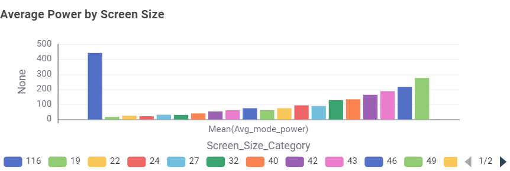

TV Energy Insights: Data Story
This section presents findings from the cleaned Australian
television dataset processed in T01(b). The dataset contains
4,759 available television models. The visualisations show
patterns related to screen technology, screen size, power
consumption and star rating.
Chart 1: What TV technologies are most common?

LCD (LED) was the most common screen technology in the
dataset, with 3,926 models. LCD had 512 models, while
OLED had 321 models.
Chart 2: What screen sizes are most frequent?

The 65-inch screen size was the most common in the
dataset, with 869 television models. Other common
sizes included 75-inch and 55-inch televisions.
Chart 3: Which screen type uses the least power?

LCD televisions had the lowest average power consumption
at approximately 85.14 W. LCD (LED) averaged about
120.52 W, while OLED averaged about 128.84 W.
Chart 4: What is the relationship between screen size and power use?

The scatter plot shows a general positive relationship
between screen size and power consumption. Larger
televisions generally use more power, although there
is some variation between models.
Chart 5: What is the relationship between star rating and screen size?

The points are spread across different screen sizes,
showing no clear consistent relationship between
screen size and star rating in this dataset.
Chart 6: How does average power change with screen size?

Average power consumption generally increases as
screen size becomes larger. For example, the average
power was about 128.21 W for 65-inch TVs and about
275.72 W for 98-inch TVs.
Conclusion
The data shows that television energy consumption is
affected by factors such as screen technology and screen
size. Larger televisions generally use more power, while
the relationship between screen size and star rating is
less clear. The 65-inch television was the most common
screen size in the dataset. These findings can help
consumers understand some of the factors to consider
when comparing television models.